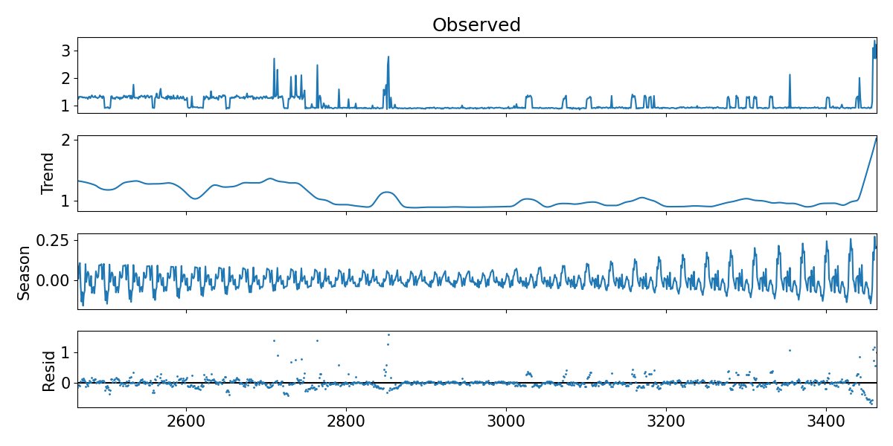
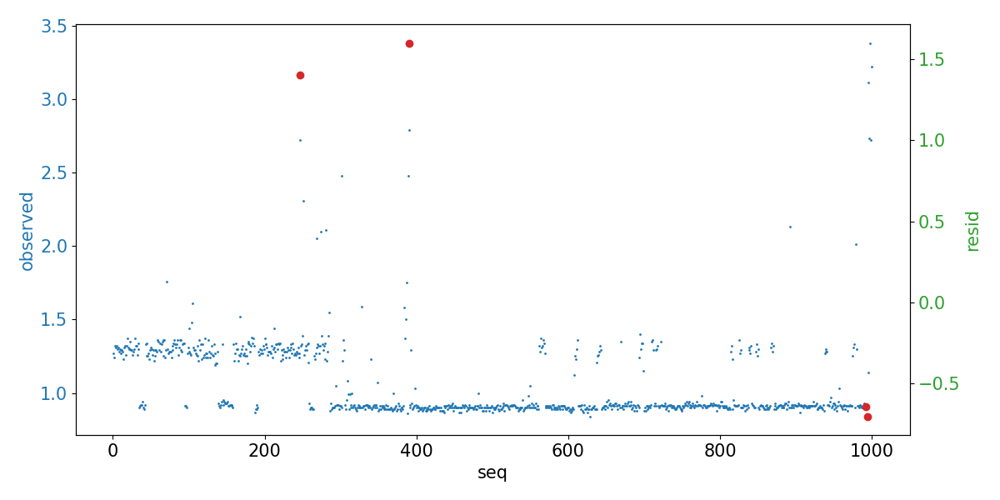

异常检测算法之STL
在工业时序数据的异常判定中，我们提供了基于SPC的单特征判定和孤立森林的多维特征判定。但是这两种异常判定对于趋势数据的判定表现得并不是很尽如人意。对于符合趋势的时序数据我们认定正常工况主要有两种：
- 某个特定值或者在其周围进行波动
- 沿着特定的趋势进行变化或者在趋势周围进行波动
对于第一种情况的趋势，SPC或者孤立森林都可以很好的应付，到了第二种情况则要求随着趋势的变化动态的调整阈值，这大大增加了算法实现的复杂度。通过调研发现，基于时序数据分解的STL算法可以满足我们的要求。
算法介绍
STL的全称是 Seasonal and Trend decomposition using Loess， 其中Loess是进行非线性关系求解的方法，ST代表数据分解的两种主要成分，因此时序数据最终被分解为三个部分：
Seasonal Component
周期性成分，代表数据按照周期性波动的行为
Trend Component
趋势性成分，代表数据按照特定趋势发展的行为
Residue Component
残值成分，代表数据去除周期性和趋势性之后的剩余部分
$$
Y_v = T_v + S_v + R_v
$$
如公式所示，针对每一个时序数据值都可以表示为三种成分之和。
算法实现
STL算法在Python中通过 statsmodels.tsa.seasonal 包提供的STL库进行实现，如下是一个简单的实现示例：
1 | |
首先选取数据源data.csv中的f1列作为研究对象，使用STL方法进行分析，指定参数period和seasonal。通过fit方法返回的分析结果中包含了我们需要的结果数据：
1 | |
调用res.plot() 方法可以将以上四个数据集在一张图中呈现出来。
场景应用
在实际应用中我们通常需要考虑两个工程性的问题，即如何选取参数和如何进行异常判定。
参数选取
在原论文中提供了6个参数，到Python的实现中变成了13个参数分布在STL构造方法和fit方法中。
正如论文中提到的一样大多数参数的设值都是相当直接的，通过字面意思可以很容易的判断应该设置的值，如period参数根据数据的特性，如果是月度数据则设置为12。在我们上面的例子中，每天的数据量为30我们把period设置为30即可。
难点在于如何合理地设置seasonal参数，seasonal参数通常设置为大于7的奇数，值越大则周期性成分中的子序列越平滑。这时候就面临着一个抉择：
- 如果设置过大，则异常点对于周期的影响无法体现，容易造成漏报
- 如果设置过小，周期内部噪音过多，容易造成误报
所以在seasonal参数设置的时候需要数据分析人员针对数据进行反复测算，最终达到以下效果：
- 对于存在异常的周期需要体现异常点对周期的影响
- 对于不存在异常的周期经过平滑之后需要遵循同样的可视化模式
判定异常
从STL算法的一般形式可以看出，如果每个点都符合周期成分和趋势成分的累加，那么对应的残值就应该等于0或者接近0。
$$
Y_v = T_v + S_v + R_v
$$
所以在实际数据的诊断中可以使用残值来进行异常诊断，具体来说就是针对拟合后的残值数据计算上下限，根据预设或者训练的异常比例判定异常。
1 | |
按照以上异常比例得到的异常点图示如图：
异常的实际含义为，在异常点数据趋势发生了变化或者数据周期性行为出现了偏差。
总结
我们通过引入STL算法来应对趋势性数据的异常检测，通过将数据分解为周期性和趋势性成分，得到数据残值作为诊断因子。
实际工程应用中再结合阈值分析或者SPC的方法可以对趋势性数据进行超差或者异常判断。STL作为分解类算法的一种，提供了简单有效的实现以及灵活的参数配置，可以应对大部分的趋势性数据检测场景。
同时由于只支持加法类型的分解，带来了一定局限性，如果需要乘法类型的分解可以考虑X11 decomposition等算法。
参考：